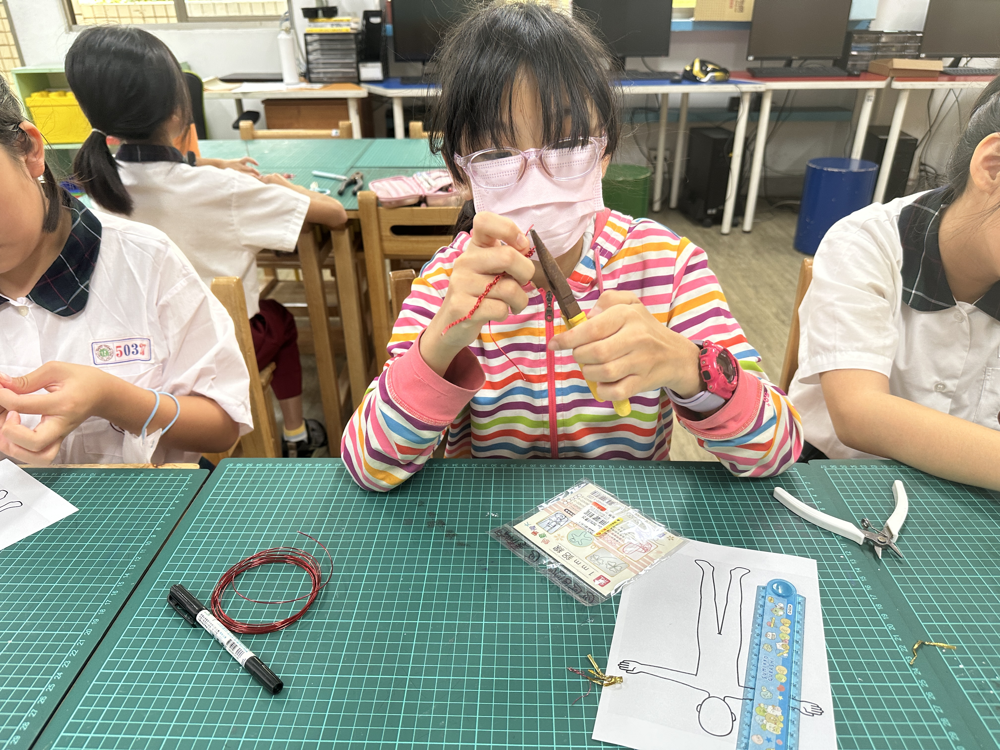
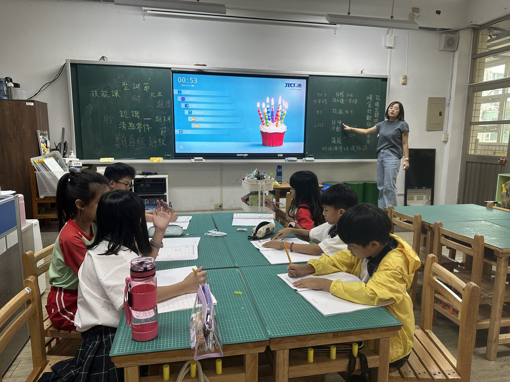
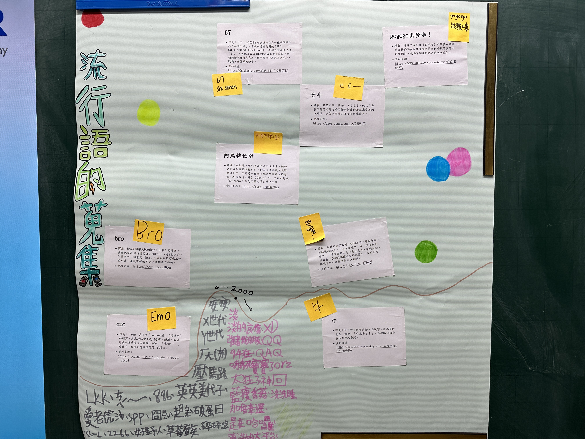
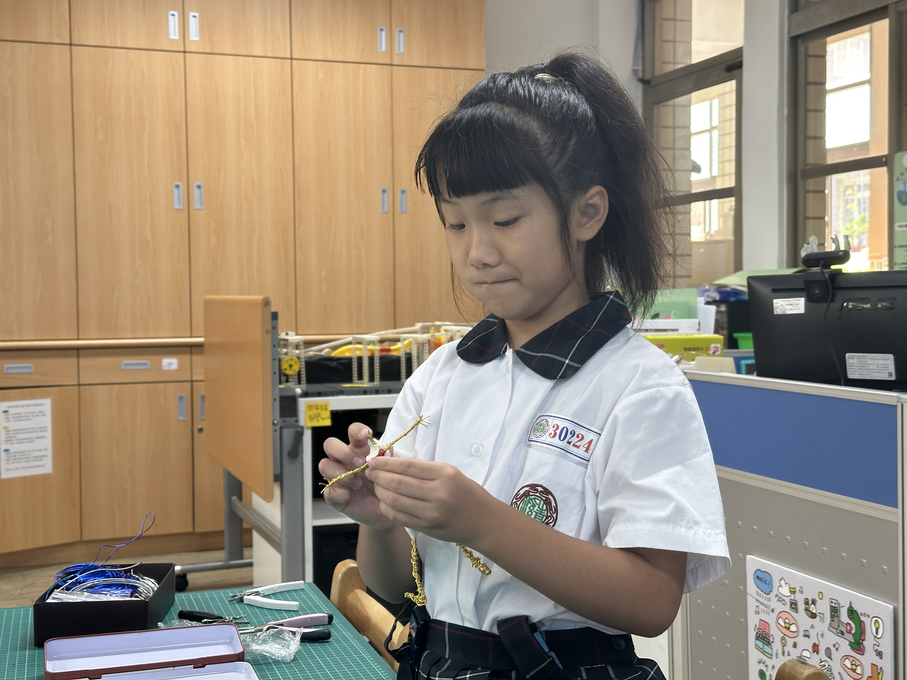
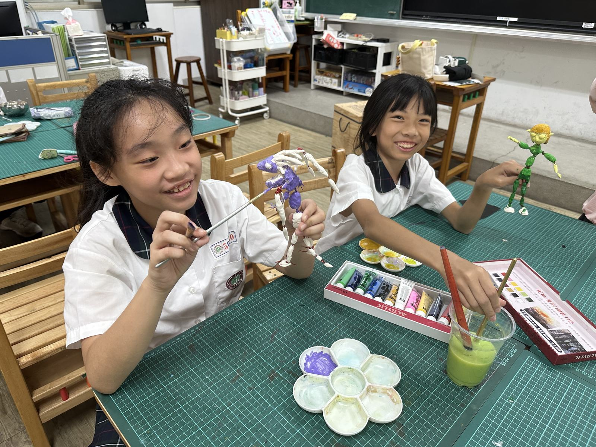
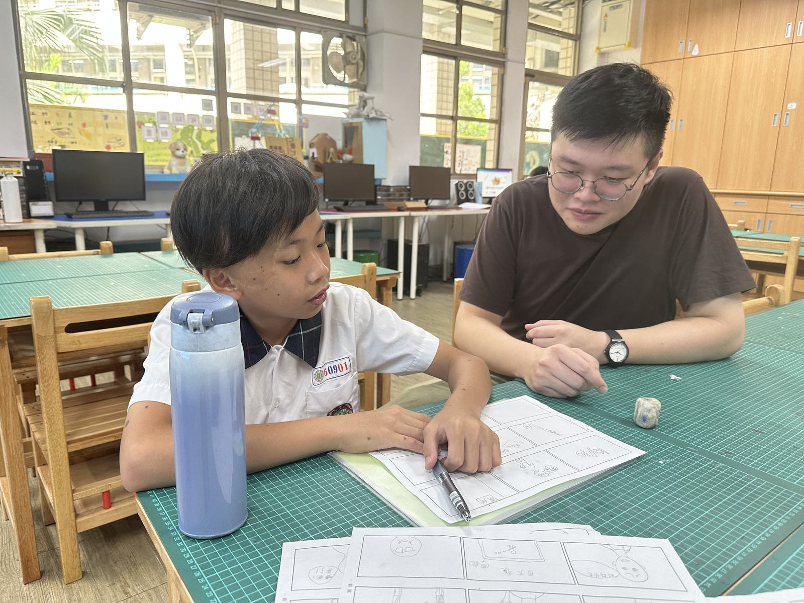

跨域學習
結合藝術、人文、科技與生活議題，發展更寬廣的學習視野。
Qing Xi Elementary School
青溪國小創造力資優班
班級特色
結合藝術、人文、科技與生活議題，發展更寬廣的學習視野。
透過提問、蒐集資料與討論分析，培養深入思考與研究能力。
將想法轉化為作品、方案與發表內容，提升實作與表達能力。
從歷程整理到公開展示，幫助學生建立自信與完整表達能力。
課程主軸
結合文化觀察、美感表達與創作實踐，培養學生的藝術感受與作品表現力。
運用科技工具、數位製作與邏輯思考，發展實驗、創作與解決問題的能力。
從真實情境出發，學習觀察問題、規劃行動，建立生活中的創意與實用能力。
從問題形成到成果發表，培養學生系統思考、研究歷程與公開表達能力。
最新資訊
網站將陸續更新本學年度課程活動、成果發表、學生作品與家長通知， 讓班級資訊更清楚、查找更方便。
113學年度課程架構
課程頁已更新五大技能學習區、五項 SDGs 議題課程，以及六年級畢業專題創作的整體學習架構。
公告窗口
家長若需進一步確認，可參考公告頁整理的承辦學校與資優教育資源中心聯絡方式。
114學年度精選




